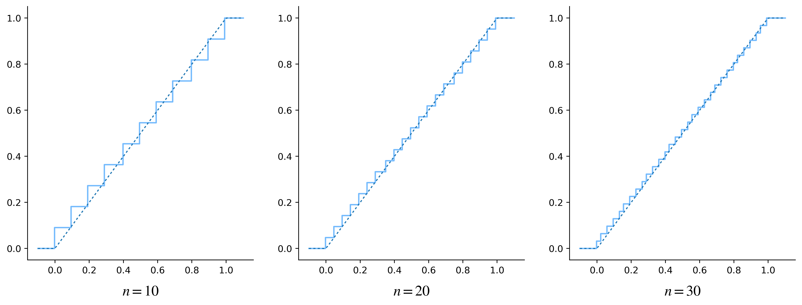
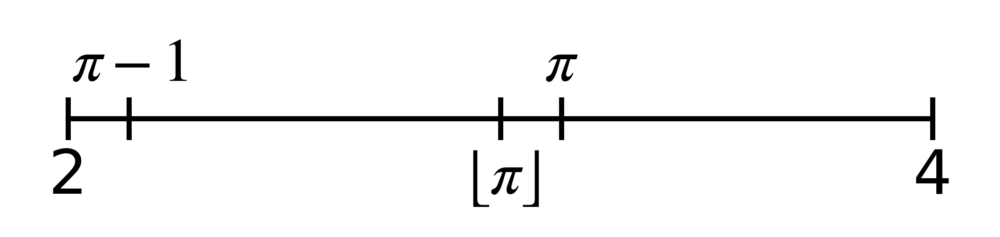

14.1. Dal discreto al continuo#
Dato \(n \in \mathbb N\), consideriamo l'insieme \(D_n = \{ \frac{i}{n}, i = 0, \dots, n \}\) e la variabile aleatoria \(X_n\) definita dalla funzione di massa di probabilità
Chiaramente, la distribuzione di \(X_n\) ricorda il modello uniforme discreto, con la sola differenza che in questo caso il dominio include la specificazione \(0\). Supponiamo ora che \(n\) assuma un valore molto grande: dato un generico \(k \in D_n\), si ha \(\mathbb P(X_n = k) = \frac{1}{n + 1}\) e dunque diventa molto vicina a zero la probabilità che \(X_n\) assuma una qualsiasi delle sue specificazioni. Ciò non deve sembrare strano, perché queste ultime si addensano in \([0, 1]\) man mano che \(n\) cresce, pertanto specificazioni molto vicine tra loro diventeranno praticamente indistinguibili.
Example 14.1 (Il multiverso DC)
A partire dal 1961, e in particolare nel numero 123 di «The Flash», le storie dei fumetti pubblicati da DC non avvengono in un unico universo, bensì in più universi che esistono in uno spazio comune, ma i cui abitanti "vibrano" a frequenze diverse. Ogni universo è identificato in modo univoco da un nome, che nella maggior parte dei casi indica come viene denominato il pianeta Terra, e l'insieme di tutti gli universi è chiamato multiverso [1]. Ogni protagonista può avere caratteristiche molto diverse a seconda del corrispondente universo: per esempio, Wonder Woman è buona quasi sempre, ma sicuramente non su Terra-Ventidue. Ora, ipotizziamo che in ognuno di questi universi esistano esattamente \(n = 15000\) protagonisti diversi, oguno con il proprio allineamento (buono, neutrale o cattivo). Immaginiamo anche che esista un criterio per scegliere a caso un universo all'interno del multiverso. La variabile aleatoria \(X_n\) che indica la frazione di protagonisti "buoni" nell'universo selezionato è distribuita sul dominio \(D_{15000}\) secondo la funzione di massa di probabilità (14.1). Ora, ha poco senso discriminare, per dire, tra le specificazioni \(\frac{42}{15000}\), \(\frac{43}{15000}\) e \(\frac{49}{15000}\), perché la loro differenza massima equivale a meno dello \(0.05\%\) del totale.
Prima di approfondire che cosa succede all'aumentare di \(n\), calcoliamo il valore atteso e la varianza di \(X_n\), perché ci saranno utili in seguito.
Lemma 14.1
Il valore atteso e la varianza di \(X_n\) sono rispettivamente uguali a \(\frac{1}{2}\) e a \(\frac{1}{12} + \frac{1}{6 n}\).
Proof. Applicando le formule per il calcolo di valore atteso e varianza si ottiene:
Va notato come il valore atteso sia sempre uguale a \(\frac{1}{2}\) indipendentemente dal valore di \(n\), come ci si può aspettare tenuto conto del fatto che, essendo la massa di probabilità costante, la centralità della distribuzione deve coincidere con il baricentro delle osservazioni. Per quanto riguarda invece la varianza, è presente un termine che dipende da \(n\) ma il cui contributo tende a diventare trascurabile man mano che questo parametro cresce.
Come dicevamo, valori tra loro abbastanza vicini per le specificazioni risultano fondamentalmente equivalenti, e dunque ha più senso ragionare in termini della probabilità che \(X_n\) assuma valori in un intervallo (anche piccolo) di specificazioni piuttosto che studiare eventi in cui essa risulta uguale a una fissata specificazione. Calcoliamo dunque la funzione di distribuzione cumulativa di \(X_n\): fissato \(x \in [0, 1]\), esisteranno \(i \in \{ 0, \dots, n \}\) ed \(\epsilon < \frac{1}{n}\) tali che \(x = \frac{i}{n} + \epsilon\), e pertanto
così che in generale
A questo punto possiamo calcolare la probabilità che \(X_n\) assuma valori in un intervallo: fissati \(a, b \in [0, 1]\) con \(a \leq b\) esisteranno \(i, j \in \{ 0, \dots, n \}\) con \(i < j\) ed \(\epsilon_1, \epsilon_2 \in [0, \frac{1}{n})\) tali che \(a = \frac{i}{n} - \epsilon_1\) e \(b = \frac{j}{n} + \epsilon_2\). Pertanto
Show code cell content
import matplotlib.pyplot as plt
import numpy as np
plt.style.use('sds.mplstyle')
from myst_nb import glue
def cdf(x, n):
return np.clip((np.floor(n * x) + 1) / (n + 1), 0, 1)
def cdf_graph(n, ax):
x = np.linspace(-0.1, 1.1, 100)
y = cdf(x, n)
ax.step(x, y)
ax.plot(x, np.clip(x, 0, 1), dashes=[2,], linewidth=1.2, color='#1f77b4')
ax.set_xlabel(rf'$n = {n}$')
fig, ax = plt.subplots(1, 3, figsize=(15, 5))
for i in range(1, 4):
cdf_graph(10 * i, ax[i-1])
plt.show()
glue("discrete-to-continuous", fig, display=True)

Fig. 14.1 Le spezzate piene mostrano i grafici della funzione di distribuzione cumulativa di \(X_n\) per \(n\) rispettivamente uguale a \(10\), \(20\) e \(30\) (da sinistra verso destra); la spezzata tratteggiata evidenzia il grafico di \(F_X\).#
Che cosa succede a \(F_{X_n}\) se il valore di \(n\) aumenta progressivamente? Consideriamo la funzione \(F: \mathbb R \to [0, 1]\) definita da
Show code cell content
fig = plt.figure(figsize=(5, 1))
plt.plot([2, 4], [0, 0], 'k')
plt.xticks([])
plt.yticks([])
s = -1
spacing = {-1: -.4, 1: .2}
for x, l in zip([2, np.pi - 1, np.floor(np.pi), np.pi, 4],
['2', r'$\pi - 1$', r'$\lfloor \pi \rfloor$', r'$\pi$', '4']):
plt.plot([x] * 2, [-.1, .1], 'k')
plt.text(x, spacing[s], l, ha='center', fontsize=18)
s *= -1
plt.ylim([-.5, .5])
plt.axis('off')
plt.show()
glue("floor-proof", fig, display=True)

Fig. 14.2 Si ricava \(x - 1 \leq \lfloor x \rfloor \leq x\) considerando banalmente il fatto che un qualsiasi numero reale è necessariamente maggiore o uguale del suo troncamento all'intero inferiore.#
La Fig. 14.1, che mostra i grafici di \(F_{X_{10}}\), \(F_{X_{20}}\) e \(F_{X_{30}}\) affiancandoli a quello di \(F\), suggerisce l'intuizione che \(F_{X_n}\) tenda a \(F\) quando \(n \to +\infty\). Non è difficile provare formalmente che questa intuizione è corretta: ricordando che per ogni \(x\) vale \(x - 1 \leq \lfloor x \rfloor \leq x\), da (14.5) si verifica che
e applicando il teorema dei due Carabinieri si ottiene \(F_{X_n}(x) \to x = F(x)\) per ogni \(x \in [0, 1]\). Estendere questo risultato a ogni \(x \in \mathbb R\) è banale [3].
Notiamo che \(F\) soddisfa tutti i criteri indicati nel Theorem 12.1, dunque essa deve essere la funzione di distribuzione cumulativa di una qualche variabile aleatoria \(X\). Questa variabile aleatoria è però completamente diversa da quelle che abbiamo finora considerato: il grafico di \(F\) non evidenzia discontinuità alle quali far corrispondere i punti di massa della distribuzione perché questa funzione è continua. D'altronde da (14.1) si vede facilmente che per ogni \(x \in \mathbb R\) si ha \(\lim_{n \to + \infty} p_{X_n}(x; n) = 0\), o equivalentemente \(\mathbb P(X = x) = 0\). Analogamente, dato un qualsiasi insieme finito \(A = \{ a_1, \dots, a_n \} \subseteq [0, 1]\) si avrà
In altre parole, qunado \(n\) tende a infinto ci troviamo di fronte a una distribuzione che non evidenzia alcun punto di massa di probabilità. Ciò richiede innanzitutto di definire in modo diverso il concetto di dominio per la distribuzione stessa. Nel caso che stiamo considerando, solo valori compresi tra \(0\) e \(1\) possono essere specificazioni valide, quindi il dominio di \(X\) può essere intuitivmente individuato nell'intervallo corrispondente. Si può inoltre verificare abbastanza facilmente che se all'inizio del paragrafo avessimo posto \(D_n = \{1, \dots, n \}\) e definito la funzione di massa di probabilità di \(X_n\) come \(p_{X_n}(x; n) = \frac{1}{n} \mathrm I_{D_n}(x)\), escludendo in altre parole il punto di massa \(0\) dal dominio, avremmo comunque ottenuto \(F\) come limite delle corrispondenti funzioni di ripartizione quando \(n \to +\infty\). Il risultato non sarebbe cambiato se avessimo deciso di escludere il punto di massa \(1\) al posto di \(0\), o di escluderli entrambi. Tenuto conto di quanto appena ricavato, possiamo per convenzione scegliere \([0, 1]\) come dominio di \(X\).
La differenza fondamentale tra \(X\) e le variabili aleatorie che abbiamo studiato finora sta proprio nel fatto che il suo dominio è un insieme continuo. Quando questo succede, si parla di variabili aleatorie aventi una distribuzione continua, o più brevemente di variabili aleatorie continue. La formalizzazione di questo tipo di variabili aleatorie e delle relative famiglie di distribuzione verrà descritta a partire dal Sezione 14.2: in particolare, nel Sezione 14.3 vedremo che \(X\) segue una distribuzione uniforme continua sull'intervallo \([0, 1]\).
Tornando a concentrarci sul caso che stiamo analizzando, la mancanza di punti di massa di probabilità richiede di rimpiazzare la corrispondente funzione con un altro strumento che permetta di calcolare le probabilità di eventi che coinvolgono \(X\). Per quanto ricavato sopra, tali eventi dovranno riguardare l'appartenenza della variabile aleatoria a insiemi continui, perché già sappiamo che in caso contrario si otterrebbe zero come valore di probabilità. In analogia con quello che ho evidenziato all'inizio del paragrafo, i valori all'interno di un insieme continuo che sono sufficientemente vicini diventano indisinguibili all'atto pratico: se per esempio \(X\) indicasse la frazione di secondo che impiega Flash a fare il suo prossimo spostamento, non farebbe alcuna differenza sapere che questa è uguale, per dire, a \(0.0004678\) oppure a \(0.0004681\) [4]. Ha quindi senso, considerare una funzione \(f_X\) definita in modo tale che il valore \(f_X(x)\) esprima intuitivamente «quanta» massa di probabilità è concentrata attorno alla specificazione \(x\).
In analogia con il concetto fisico di densità, si dice che \(f_X\) è la funzione di densità di probabilità (o, più brevemente, funzione di densità) di \(X\), e per ogni sottoinsieme \(B \subseteq [0, 1]\) si ha
Vista l'uniformità dei modelli discreti via via considerati per \(X_n\), ha senso supporre un'analoga uniformità anche nella densità di probabilità per \(X\), e dunque che valga \(f_X(x) = k\) per una qualche costante \(k \in \mathbb R\) quando \(x \in [0, 1]\). D'altronde, \(\mathbb P(X \in [0, 1]) = 1\) e pertanto
il che significa che \(f_X(x) = 1\) per ogni \(x \in [0, 1]\). Analogamente, sappiamo che \(X\) non può assumere valori al di fuori di \([0, 1]\), e dunque la sua densità sarà nulla in questa regione di \(\mathbb R\). Riassumendo, \(f_X(x) = \mathrm I_{[0, 1]}(x)\). Risulta quindi molto facile calcolare la probabilità che \(X\) sia contenuta in un intervallo \((a, b] \subseteq [0, 1]\) come
Questo risultato è coerente con quello che otterremmo ricavando la stessa probabilità usando la funzione di ripartizione come indicato in (12.1): infatti,
Vale la pena osservare una cosa interessante: questo risultato non dipende dalla particolare forma dell'intervallo considerato, che può essere aperto, semichiuso o chiuso. Infatti, le proprietà dell'integrale di Riemann ci assicurano che calcolando, per esempio, \(\mathbb P(X \in [a, b])\) in modo analogo a quanto fatto in (14.7), otterremmo lo stesso valore di probabilità. Non c'è alcuna incoerenza in questo risultato, in quanto \(\mathbb P(X \in [a, b]) = \mathbb P(X \in (a, b]) + \mathbb P(X = a)\) e l'ultima di queste probabilità è nulla. Con un ragionamento analogo è facile mostrare che succede lo stesso quando si considerano intervalli della forma \((a, b)\) o \([a, b)\).
Vedremo in modo preciso come la maggior parte dei concetti già introdotti per le variabili aleatorie discrete si possono estendere in modo naturale alle variabili aleatorie continue. Questo richiederà quasi sempre di modificare le formule relative sostituendo la funzione di massa di probabilità con la funzione di densità e le sommatorie con integrali, ma in alcuni casi non sarà strettamente necessario utilizzare il formalismo matematico. Consideriamo per esempio il valore atteso di \(X\): per calcolarlo è sufficiente osservare che la sua densità è costante in \([0, 1]\) e nulla altrove, pertanto la centralità della distribzuione di \(X\), e dunque il suo valore atteso, deve essere uguale a \(\frac{1}{2}\). D'altra parte, abbiamo visto come \(\mathbb E(X_n) = \frac{1}{2}\), dunque è naturale che lo stesso valga per la distribuzione limite che stiamo considerando. Facendo un ragionamento analogo, possiamo supporre che la varianza di \(X\) si ottenga come
Nel Sezione 14.3 vedremo come calcolare questi due valori in modo formale.